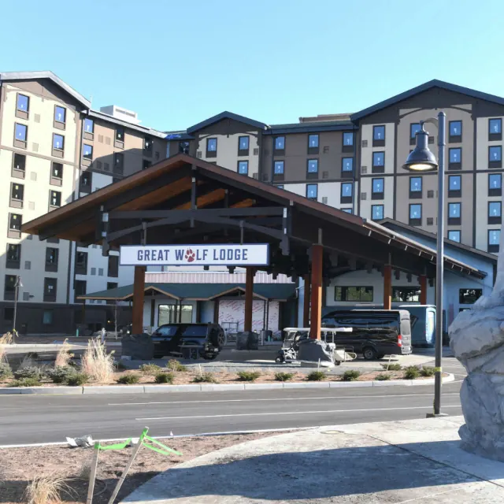
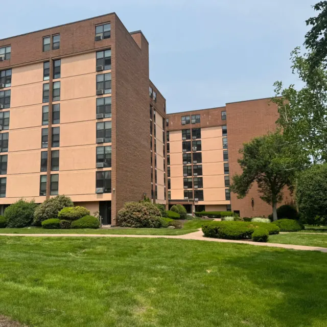
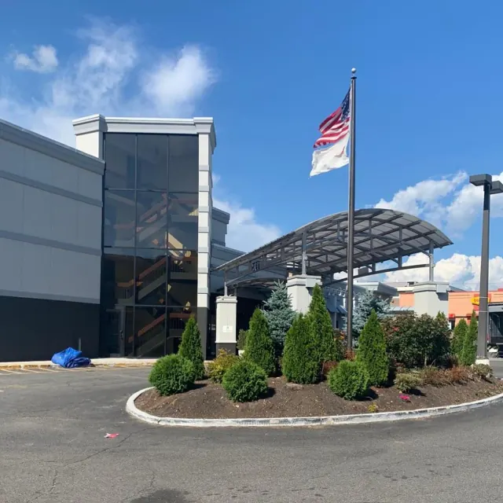
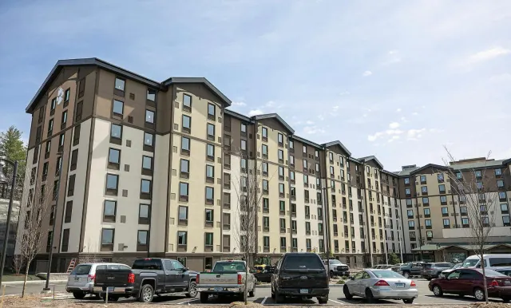

Commercial exterior projectsProyectos de exteriores comerciales
See Wallder Construction project records and job photos, including EIFS at Great Wolf Lodge and other commercial and multifamily work.Consulta el registro de proyectos y las fotos de Wallder Construction, incluido el EIFS de Great Wolf Lodge y otros trabajos comerciales y multifamiliares.
Project photosFotos de proyectos












Project recordRegistro de proyectos
- Great Wolf LodgeGreat Wolf Lodge
- ConnecticutConnecticut
- EIFS for the hotel and water park.EIFS para el hotel y parque acuático.
- Hilton hotelHotel Hilton
- New London, CTNew London, CT
- Exterior restoration.Restauración exterior.
- Shelton apartment buildingEdificio de apartamentos en Shelton
- Shelton, CTShelton, CT
- Thin brick and stucco.Ladrillo delgado y estuco.